The Fourier transform
Jean-Baptiste Joseph Fourier (1768-1830) discovered that any signal can be decomposed into a sum of sinusoidal waves. The Fourier transform is the mathematical operation that performs this decomposition. This program serves to illustrate the Fourier transform of 2D images, which is fundamental to many image processing techniques in electron microscopy and beyond. But first, let us review some basic theory.
What is the Fourier transform?
The Fourier transform decomposes an image f(x,y) into a sum of plane waves. For a 2D continuous image its forward transform is
F(u,v) = ∫∫ f(x,y) · e−i 2π(ux + vy) dx dy.
Using Euler's identity e−iθ = cos θ − i sin θ, the integral splits into a cosine part (the real component) and a sine part (the imaginary component): F(u,v) = R(u,v) − i·I(u,v). The complex value F therefore carries two real numbers at every frequency (u,v): how much of a cosine wave and how much of a sine wave at that spatial frequency is needed to reconstruct the image.
The same information can be re-expressed in polar form. The amplitude is the modulus |F| = √(R² + I²); it tells how strong the wave at frequency (u,v) is. The phase is the angle φ = atan2(I, R); it tells where that wave is positioned on the image. Amplitude alone discards location; phase alone keeps structure but loses contrast.
After centring (which the app does automatically), the zero frequency — the DC term, equal to the mean of the image — sits at the centre of displayed Fourier transform. Low spatial frequencies (large features, slow variation) lie close to that centre; high spatial frequencies (fine detail, sharp edges) lie near the corners. The highest frequency representable on a sampled grid is the Nyquist frequency: along each axis it equals 1 / (2 · pixel size), so a 1 Å pixel resolves down to 2 Å along the row / column directions and √2 · pixel size at the corners.
For any real-valued input image the transform obeys Friedel symmetry: F(−u,−v) = F*(u,v), where * denotes the complex conjugate. As a consequence the amplitude display is point-symmetric about the centre, and the phase display is anti-symmetric (opposite frequencies carry opposite-sign phases). This means the Fourier transform display is fully described by one half of its area; the other half is a redundant mirror image.
The two panels below show these conventions on a concrete example: a small patch of a 2D crystal, and its Fourier transform. The lattice of blobs in real space produces a reciprocal lattice of discrete spots in Fourier space — rotated by the same angle as the real-space lattice, and the wider the blob spacing, the closer the spots sit to the centre.
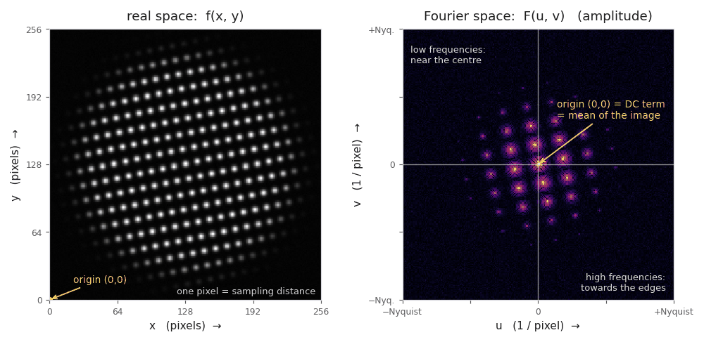
Left: real space. The image is indexed by x and y in pixels, with the origin (0,0) in the bottom-left corner. Right: Fourier space. The axes u and v are spatial frequencies in 1/pixel; the origin (0,0) sits in the centre and carries the DC term, and the edges of the display are the Nyquist frequency, 1 / (2 · pixel size) — the finest detail a sampled image can hold. Note that the transform is point-symmetric about its centre (Friedel symmetry), and that its lattice of spots is rotated by the same angle as the lattice in the image.
What are the Convolution and Correlation Theorems?
These two theorems are the reason why so much of image processing is done in Fourier space. Both describe an operation that is expensive and hard to picture in real space — sliding one image over another and integrating the overlap at every possible shift — and both state that in Fourier space the very same operation becomes a simple point-by-point multiplication of the two transforms. In one sentence:
convolution and correlation in real space ↔ multiplication in Fourier space.
The Fourier Analyzer lets you see both sides of that equivalence: the real-space images on the left, their transforms on the right.
1. Convolution — "stamping" one image onto another
The everyday picture. Take the object f and replace every single point of it by a small blurred blob h, then add all those blobs up. That is a convolution. If the object is a molecule made of atoms and h is the blur that the microscope gives to one atom (its point spread function, PSF), then the recorded image is exactly the object convoluted with the PSF. Blurring, smoothing, band-pass filtering, applying a CTF — all of these are convolutions.
In real space the convolution of an image f(x,y) with a kernel h(x,y) is written with the symbol ⊛ and defined as
(f ⊛ h)(x,y) = ∫∫ f(x′,y′) · h(x − x′, y − y′) dx′ dy′.
Read it as an instruction: for each output position (x,y), shift the kernel h so that its origin lands there, multiply it with the image underneath, and sum everything up. Doing this for all output pixels of an N×N image costs of the order of N4 multiplications.
In Fourier space the same result is obtained by a single multiplication — this is the convolution theorem:
FT{ f ⊛ h } = F(u,v) · H(u,v), i.e. f ⊛ h = FT−1{ F · H }.
Each frequency of the image is simply scaled (in amplitude) and shifted (in phase) by the value of H at that same frequency. H is called the transfer function of the operation — in an electron microscope it is the CTF. Because the fast Fourier transform costs only about N2·log N operations, the Fourier route is dramatically faster than the real-space sum, and it is also far easier to interpret: "which frequencies survive, and with what sign?" is answered by simply looking at H.
The theorem also works the other way round (the dual): a multiplication in real space is a convolution in Fourier space,
FT{ f · h } = F ⊛ H.
This is why masking matters: cutting an image out with a sharp-edged mask (a multiplication in real space) convolutes its Fourier transform with the transform of the mask, and the ripples of that transform smear every spot in Fourier space — the familiar "ringing" artefacts. A soft-edged (cosine-tapered) mask has a compact transform and therefore does much less damage.
Example. The object below consists of five copies of a seven-atom motif. Convoluting it with a ring-shaped point spread function replaces every atom by that ring. In Fourier space (bottom row) nothing is smeared at all — the transform of the object is simply multiplied, frequency by frequency, with the transform of the PSF, which suppresses some resolution shells and keeps others.
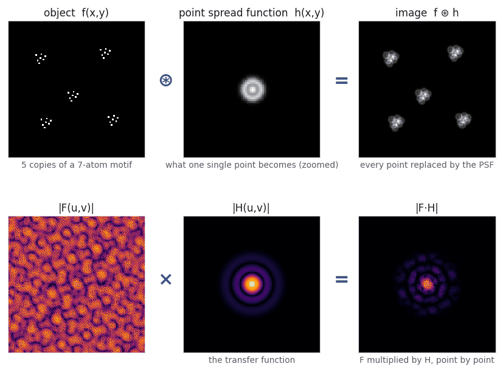
Top: real space — the object f, the point spread function h, and the recorded image f ⊛ h. Bottom: the corresponding Fourier amplitudes — the very same image is obtained by multiplying F with H pixel by pixel. The dark rings in |F·H| are the frequencies that the PSF does not transmit.
2. Correlation — "how well do these two match, at every shift?"
The everyday picture. Slide a reference image g (a template) across the image f, and at every possible shift ask: how similar are the two here? The answer, plotted as a function of the shift, is the cross-correlation function. Wherever the template matches, the product of the two adds up constructively and a bright peak appears; the position of the peak is exactly the shift at which the match occurs. This is how particles are picked, how images are aligned to a reference, and how drift between movie frames is measured.
In real space the cross-correlation (symbol ⊗) is
(f ⊗ g)(x,y) = ∫∫ f(x′ + x, y′ + y) · g*(x′,y′) dx′ dy′,
where * denotes the complex conjugate (for a real image, simply g itself). Again an N4-type cost if done literally.
In Fourier space, the correlation theorem states
FT{ f ⊗ g } = F(u,v) · G*(u,v), i.e. f ⊗ g = FT−1{ F · G* }.
The only difference to the convolution theorem is the complex conjugate on G. Since conjugation means "flip the sign of all phases", the correlation keeps the amplitudes of both transforms but subtracts the phases of the reference from those of the image: |F|·|G| with phase (φF − φG). Where the two images agree, the phase difference is zero for all frequencies, all waves add up in step, and a sharp peak forms at that position — that is the whole magic of correlation, seen from Fourier space.
Example. Five identical particles are buried in noise so strong that they are hard to see by eye. Correlating the image with a single noise-free copy of the particle produces one clear peak per particle, at the particle's position.
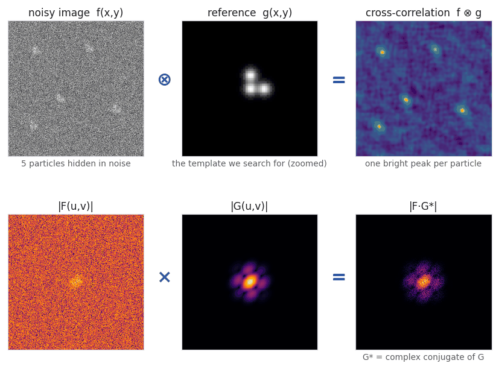
Top: real space — a noisy image, the reference, and their cross-correlation with one peak per particle. Bottom: the same result is the inverse transform of F·G*, a plain point-by-point multiplication.
The difference between Convolution and Correlation
3. The only real difference: a flip
Convolution and correlation are almost the same operation. Both slide one function over the other and integrate the product. The difference is that convolution flips the kernel first (the argument is x − x′), whereas correlation does not (the argument is x′ + x). Formally,
f ⊗ g = f ⊛ g*(−x, −y).
For a symmetric kernel (a Gaussian, a centro-symmetric PSF) the flip changes nothing and the two operations give the identical result — which is why the distinction is so often glossed over. For an asymmetric kernel the two results are mirror images of each other, as the 1D example shows:
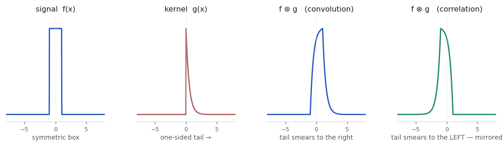
A symmetric box convoluted with a one-sided kernel is dragged in the direction of the kernel's tail; the correlation with the same kernel is dragged the opposite way. In Fourier space this flip is exactly the complex conjugation of G.
Autocorrelation - Correlation of a function with itself
- The autocorrelation is always centro-symmetric and has its highest peak at the origin (every image matches itself perfectly at zero shift).
- It contains all interatomic vector information but no absolute positions — in crystallography this is the Patterson map.
- It is translation invariant: shifting the image does not change it. That is useful (alignment-free comparison) and limiting (you cannot recover positions from it) at the same time.
The special case g = f: the autocorrelation
Correlating an image with itself gives the autocorrelation function. Its Fourier-space form follows immediately from the correlation theorem with G = F:
FT{ f ⊗ f } = F · F* = |F(u,v)|².
The transform of the autocorrelation is the power spectrum — the squared amplitude, with all phase information discarded (this statement is the Wiener–Khinchin theorem). Consequences worth remembering:
Practical points when you compute these yourself
- The FFT is circular. Multiplying transforms implies a periodic convolution: whatever leaves the image on the right re-enters on the left. If the kernel is wide, pad the image (typically to twice the size, with the mean value) before transforming, and crop the result afterwards — otherwise you get wrap-around artefacts.
- Origin conventions. The kernel must be centred on the array origin
(pixel 0,0) before its transform is taken, not on the middle of the image — otherwise the
result comes out shifted by half the image. Most libraries provide an
ifftshiftfor exactly this. The Fourier Analyzer will handle this automatically. - Normalisation. A raw cross-correlation peak grows with the local brightness of the image, so bright junk can outshine a real match. The normalised cross-correlation (dividing by the local standard deviations) removes this bias and is what particle pickers actually use.
- Speed. Real-space convolution costs ≈ N4 operations for an N×N image and kernel; via FFT it is ≈ N2·log N. For a 1024×1024 image that is the difference between minutes and milliseconds. Only for very small kernels (a 3×3 smoothing mask) is direct real-space computation faster.
What are Complex Numbers?
Every value in a Fourier transform is a complex number. That sounds forbidding, but the reason is simple and very physical: to describe a wave you need two numbers — how strong it is, and where its crests sit. A single real number cannot carry both. A complex number is exactly the book-keeping device that holds two numbers in one symbol, with multiplication rules that happen to be precisely the rules that waves obey.
1. Real and imaginary parts
The imaginary unit i is defined by the one property
i² = −1,
i.e. i = √−1, a number that no real number can be (any real number squared is positive). Nothing deeper is needed. A complex number is then simply a pair of ordinary real numbers, one plain and one carrying the label i:
z = a + i·b,
where a = Re(z) is the real part and b = Im(z) the imaginary part. The i is best read not as "imaginary" in the sense of unreal, but as a bookkeeping tag that keeps the second number from mixing with the first — just as the "y" in a map coordinate does not mix with the "x".
The complex conjugate of z, written z*, is obtained by flipping the sign of the imaginary part: z* = a − i·b. It will turn out to be the mathematical equivalent of "mirror" or "run the wave backwards", and it is the only difference between the convolution and the correlation theorem.
2. Cosine and sine: why a wave needs two numbers
Consider one of the plane waves that a Fourier transform decomposes an image into. It has a given wavelength and direction, but it may sit anywhere: its crests can be shifted along the wave direction. There are two "reference" waves for a given frequency: the cosine, which has a crest exactly at the origin, and the sine, which is the same wave shifted by a quarter of a wavelength. Any shifted version of that wave can be written as a weighted sum of these two:
a·cos(2πx) + b·sin(2πx) = A·cos(2πx − φ), with A = √(a² + b²) and φ = atan2(b, a).
So the two numbers (a, b) — how much cosine, how much sine — carry exactly the same information as the two numbers (A, φ) — how strong, and how shifted. This is the whole content of the complex number z = a + i·b that the Fourier transform stores at each frequency.
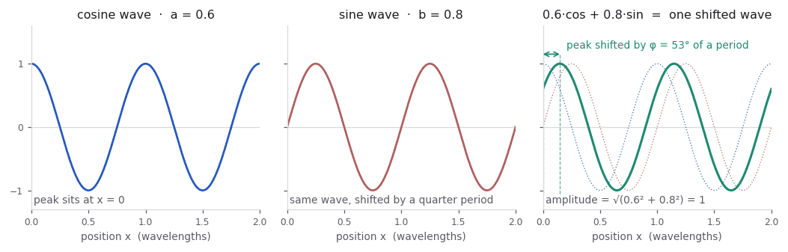
Adding 0.6 of a cosine and 0.8 of a sine gives one single wave of the same frequency, with amplitude √(0.6² + 0.8²) = 1, shifted by φ = 53°. The pair (cos-weight, sin-weight) and the pair (amplitude, phase) are two descriptions of the same wave.
3. The Argand diagram: amplitude and phase
Because a complex number is a pair of real numbers, it can be drawn as a point in a 2D plane, or better, as an arrow from the origin in a 2D plane. This plane is called the Argand diagram (or complex plane): the horizontal axis carries the real part (the cosine content), the vertical axis the imaginary part (the sine content).
The Argand diagram. The same complex number is described either by its Cartesian components (a, b) — the cos/sin view — or by the length and direction of the arrow (|z|, φ) — the amplitude/phase view.
The last line of the figure is Euler's identity, eiφ = cos φ + i·sin φ, which lets us write any complex number in the compact polar form
z = |z| · eiφ.
Read it as: "an arrow of length |z| pointing in the direction φ". It is exactly the same object as a + i·b, only written in polar instead of Cartesian coordinates. This is why the exponential e−i2π(ux+vy) in the Fourier integral is nothing but a wave: it is an arrow of length 1, spinning as you walk across the image.
4. Adding and subtracting: use the Cartesian form
Addition is done component by component — real with real, imaginary with imaginary — exactly like adding two vectors head-to-tail:
(a₁ + i·b₁) + (a₂ + i·b₂) = (a₁ + a₂) + i·(b₁ + b₂), and likewise with − for subtraction.
Note that amplitudes do not simply add: two waves of equal amplitude and opposite phase cancel completely (1 + (−1) = 0), while two in-phase waves reinforce. This is interference, and it is why adding is natural in the cos/sin (Cartesian) form and awkward in the amplitude/phase (polar) form. It is also the reason why the Fourier transform is linear: FT{f + g} = F + G, frequency by frequency.
5. Multiplying and dividing: use the polar form
Multiplication in Cartesian form follows from i² = −1:
(a₁ + i·b₁)·(a₂ + i·b₂) = (a₁a₂ − b₁b₂) + i·(a₁b₂ + b₁a₂),
which looks messy — but in polar form it becomes beautifully simple. Multiplying two complex numbers multiplies their amplitudes and adds their phases; dividing divides the amplitudes and subtracts the phases:
z₁·z₂ = |z₁||z₂| · ei(φ₁+φ₂) z₁/z₂ = (|z₁|/|z₂|) · ei(φ₁−φ₂).
Two consequences are worth memorising, because they explain most of what happens in Fourier space:
- Multiplying by a pure phase factor eiφ is a rotation in the Argand diagram: it leaves the amplitude untouched and only moves the wave. Applying a phase ramp (a phase that grows linearly with frequency) to every Fourier component therefore shifts the whole image in real space without changing a single amplitude — the shift theorem. The Phase ramp tool of the Fourier Analyzer does exactly this.
- Multiplying by z* subtracts phases. That is why the cross-correlation is F·G* (see Convolution and Correlation Theorems above): where image and reference agree, all phase differences become zero, every wave adds up in step, and a peak forms. The extreme case is a number multiplied by its own conjugate, z·z* = |z|², in which the phase cancels completely — applied to a whole transform, F·F* = |F|² is the power spectrum, which is why it contains no phase information at all.
Division is used less often, but it is the formal basis of deconvolution: if an image is a convolution, its transform is a product (F·H), so dividing by H undoes it — which fails wherever H is near zero (dividing by almost nothing amplifies noise without limit), and this is precisely why CTF correction does not simply divide by the CTF.
6. How the Fourier Analyzer displays complex numbers
A complex-valued image cannot be shown as one grey-scale picture — there are two numbers per pixel. The app therefore offers four ways to look at the very same Fourier transform; cycle through them with the Mode button (see FT display modes below). Nothing is recomputed when you switch: only the way the complex numbers are rendered changes.
| Mode | What is drawn | Which part of z it shows |
|---|---|---|
| Cosinus / Sinus | Two grey-scale panels, Re(F) and Im(F) | The Cartesian form a + i·b. Both panels contain positive and negative values (mid-grey = zero). For a real input image the Cosinus panel is symmetric and the Sinus panel anti-symmetric — Friedel symmetry. |
| Amplitude / Phase | Two grey-scale panels, |F| and φ | The polar form. The amplitude is displayed as log(1 + |F|), because the amplitudes span many orders of magnitude and a linear scale would show nothing but the central DC spot. The phase is shown in degrees, in the range −180° … +180°. |
| Complex | One colour panel (HSV): hue = phase, brightness = amplitude | Both numbers at once — this is the Argand arrow, colour-coded: the direction of the arrow becomes the colour, its length becomes the brightness. The colour-wheel legend below the panel is literally the Argand diagram of the unit circle. |
| Powerspectrum | One grey-scale panel, log(1 + |F|²) | F·F* — amplitude squared, all phase information discarded. Best for seeing Thon rings, lattice spots and resolution shells; useless for reconstructing the image. |
Advanced: What is the Contrast Transfer Function (CTF) of an Electron Microscope?
The Contrast Transfer Function (CTF) of an electron microscope defines, how contrast from the structure is transfered into the image. This can be studied in real space by investigating the point spread function (PSF) of the microscope, which is the ripple function that is convoluted with every atomic detail of the sample to give the image. But this can also, and much more efficiently, be studied in Fourier space, where the Fourier transform of the projection of the sample is simply multiplied by the CTF, to give the Fourier transform of the image. This multiplication is much easier to understand and to interpret than the convolution in real space. This is one of the many examples, where Fourier space is helpful.
Below, you will find a short introduction to the CTF, and how it can be calculated and visualized in the Fourier Analyzer.
The CTF equation (Scherzer wave-aberration function). The
heart of the CTF is the wave-aberration function χ, also called the
Scherzer phase-shift equation. It gives the phase error that the objective
lens imparts to an electron wave scattered to spatial frequency q,
relative to the unscattered beam:
χ(q) = ½·π·Cs·λ³·q4 − π·Δf·λ·q²,
which is often written in the factored form
χ(q) = π·λ·q²·(½·Cs·λ²·q² − Δf).
The individual components are:
- q — the spatial frequency (in 1/Å), i.e. the radial distance from the centre of the Fourier transform. Higher q means finer detail. The scattering angle is β = λq.
- λ — the electron wavelength, fixed by the acceleration voltage (relativistically corrected). Higher voltage → shorter λ → weaker aberrations. For example 300 kV gives λ ≈ 0.0197 Å.
- Δf — the defocus (positive = underfocus). This is the term you tune most often. It scales with q², so it dominates at low and medium spatial frequency and sets the spacing of the inner Thon rings.
- Cs — the spherical aberration coefficient of the objective lens. Its term scales with q4, so it only becomes important at high spatial frequency, where it bends the phase over ever more rapidly and crowds the outer Thon rings together.
- ½ and π — geometric constants from the path-length / phase bookkeeping; the ½ belongs specifically to the spherical-aberration term.
The two terms have opposite sign: defocus and spherical aberration partly cancel. Choosing the defocus so that this cancellation flattens χ over the widest possible frequency band gives the classic Scherzer defocus, ΔfSch ≈ 1.2·√(Cs·λ), at which the CTF stays close to its optimum (−1) over the broadest range of q before the first zero crossing.
The final transfer function combines the wave-aberration phase χ with the contrast as
CTF(q) = A·sin(−χ) + B·cos(−χ)
Here, A = sqrt(1 − B2), where A is the fraction of phase contrast and B is the
fraction of amplitude contrast.
As a result, the CTF is a sinusoidal function of the wave-aberration phase χ, which itself is a polynomial function of the spatial frequency q. The CTF oscillates between positive and negative values, with zero crossings at the Thon rings. The amplitude contrast term B shifts the Astigmatism, beam tilt and other effects add further terms as discussed below.
A typical CTF
The plot below is the radial CTF for a realistic set of parameters: 300 kV (λ ≈ 0.0197 Å), Cs = 2.7 mm, 0.8 µm underfocus, and 7% amplitude contrast. It is a 1D cut of the 2D CTF, plotted against spatial frequency q.
Radial CTF for 300 kV, Cs = 2.7 mm, 0.8 µm underfocus, 7% amplitude contrast. Blue: the CTF; red dashed: the ± decay envelope.
Reading the plot from left to right:
- At q = 0 the curve starts near +0.07, not at zero. This small offset is the amplitude-contrast term B: without it a pure phase-contrast CTF would be exactly 0 at the origin, transferring no low-resolution information at all.
- First passband. The CTF rises to its maximum (≈ 1) and stays high over a broad low-frequency band before its first zero crossing (here near q ≈ 0.08 1/Å, i.e. ≈ 12 Å). Features in this band are transferred with full, single-sign contrast — this is the useful low-resolution information.
- Zero crossings (Thon rings). Every point where the curve touches 0 is a spatial frequency where no information is transferred. In a 2D power spectrum these zeros trace out the dark Thon rings. Their spacing is set mainly by the defocus: more underfocus → more, closer-spaced rings.
- Contrast reversals. Between successive zeros the CTF alternates sign (positive lobe, then negative lobe, …). Each sign flip is a contrast reversal: black features become white and vice versa. Correcting for these sign flips is exactly what CTF correction does before averaging particles.
- Rings crowd together at high q. The oscillations get faster toward the right because the Cs·q4 term in χ grows rapidly — the same effect that limits the point-resolution of the microscope.
- The envelope (red dashed). The oscillation amplitude decays toward high frequency. This envelope comes from partial spatial and temporal coherence (finite gun-opening angle, energy spread, defocus spread) plus specimen/detector effects, and it sets the effective resolution limit: beyond the point where the envelope falls into the noise, the Thon rings are no longer visible and no information survives.
What makes up the envelope?
The red dashed envelope is not a single physical effect but the product of several damping terms, each suppressing high spatial frequencies for a different reason:
E(q) = Etc(q)·Esc(q)·MTF(q)·Edrift(q)·EB(q).
-
Temporal coherence (focal spread). The accelerating
voltage, the objective-lens current and the electrons’ own energy
spread ΔE all fluctuate, and through the chromatic
aberration Cc these blur the focal length by a focal
(defocus) spread Δ. Averaging the CTF over that Gaussian defocus
spread damps it as
Etc(q) = exp[ −½(πλΔq2)2 ], with Δ = Cc √((ΔE/E)2 + (2ΔI/I)2 + (ΔV/V)2).
In the tool this is the Energy spread and Defocus spread parameters. -
Spatial coherence (beam convergence). A finite
illumination semi-angle α (the gun-opening angle) lights the
specimen from a range of directions; each direction gives a slightly
shifted CTF, and their sum damps as
Esc(q) = exp[ −(πα)2(Csλ2q3 − Δz q)2 ].
The damping is strongest where the CTF oscillates fastest (large dχ/dq), so it can even be reduced near the defocus that flattens χ. In the tool this is the Open angle gun parameter. - Detector MTF. The camera does not transfer high frequencies perfectly; its modulation transfer function MTF(q) multiplies the signal and falls off toward the Nyquist frequency. (There is no simple closed form; it is not simulated here.)
-
Specimen motion and drift. Beam-induced motion or stage
drift over the exposure smears the image. For a linear drift of total
length d the envelope is a sinc,
Edrift(q) = |sinc(πdq)| = |sin(πdq) / (πdq)|. (Not simulated here.) -
Overall B-factor. Radiation damage and all residual,
hard-to-model damping are usually lumped into a single empirical Gaussian,
EB(q) = exp(−Bq2/4),
the B-factor that is later removed when sharpening a map.
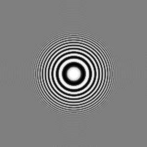
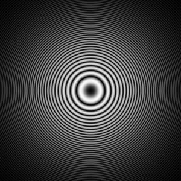
The 2D version of the plot above, for the same typical parameters (300 kV, Cs = 2.7 mm, 0.8 µm underfocus, 7% amplitude contrast, no beam tilt). Right: the 2D CTF, whose radial cut is exactly the 1D curve above — each dark ring is a zero crossing. Left: its inverse Fourier transform, the real-space PSF that CTF SIM writes to panel 1 — the image of a single atom.
Both panels are point-symmetric: rotating either by 180° about its centre leaves it unchanged. This is the normal, aberration-symmetric case — with no beam tilt the wave-aberration χ is even in k, so the CTF is even, its power spectrum is centrosymmetric, and the PSF is a symmetric ring pattern that does not shift the apparent position of the atom. The concentric rings in the PSF are the delocalisation caused by defocus: information at each spatial frequency is spread out into a ring whose radius grows with defocus. Turning on beam tilt breaks this symmetry — see Beam tilt and coma below, where the PSF becomes a one-sided comet.
Astigmatism
Astigmatism. Real lenses are rarely perfectly round: the focal length differs slightly between two perpendicular directions, so the defocus becomes a function of azimuth, Δf(θ) = Δf + Δfa·cos(2(θ − θa)). Here Δfa is the astigmatism amplitude and θa its direction, and the otherwise circular Thon rings become ellipses. The example below adds an astigmatism amplitude of Δfa = 300 nm at θa = 30° to the same CTF as above (so the defocus swings between 0.5 and 1.1 µm across the two axes):
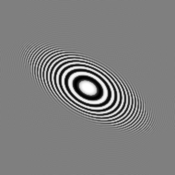
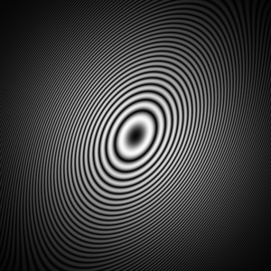
Notice the two ellipses are perpendicular. Along the maximum-defocus direction the CTF oscillates fastest, so its rings are pulled in toward the centre — the ring ellipse is short along that axis. In real space the defocus delocalisation is largest along that same direction, so the PSF is stretched along it. The long axis of the PSF therefore lines up with the short axis of the ring ellipse.
Unlike beam-tilt coma, astigmatism keeps both images point-symmetric: the cos(2θ) term is even under k → −k (it has two-fold symmetry), so the CTF stays even, the power spectrum stays centrosymmetric, and the atom is blurred but not shifted. Astigmatism is exactly what CTF FIT measures alongside the mean defocus: the ellipticity of the rings gives the astigmatism magnitude and the tilt of the ellipse gives its angle. (Note the CTF SIM Astigmatism field is the amplitude Δfa — half of the full peak-to-peak difference between the two axes.)
Beam tilt and coma.
Beam tilt. When the illuminating beam is not exactly
parallel to the optical axis but tilted by a small angle τ, the
scattering angle is shifted (the spatial frequency is effectively
displaced, k → k + τ/λ). To first order
in the tilt this adds a coma-like term to the wave-aberration function:
Δχ = 2π·Cs·λ²·q³·τ·cos(θ − τdir),
where q is the spatial frequency, θ its azimuth in Fourier
space, λ the electron wavelength, Cs the spherical
aberration, τ the tilt magnitude (in radians; entered in mrad), and
τdir the tilt direction (CCW from +x, the same convention as
the astigmatism direction). This extra phase scales with
Cs·q³ and is odd in θ: the
cos(θ − τdir) factor changes sign across the
origin, so Δχ(−k) =
−Δχ(k). Setting the beam tilt to 0 mrad
removes it and recovers the usual centrosymmetric case.
Two symmetries — keep them apart. Everything that follows is forced by two exact Fourier facts. They are easy to conflate, and conflating them is what makes beam tilt confusing:
- Hermitian, F(−k) = F*(k) ⇔ the real-space image is real.
- Even, F(−k) = F(k) ⇔ the real-space image is point-symmetric.
Coma is a real image that is one-sided. So it demands a transfer function that is Hermitian but not even. Note what this rules out: a real-valued function in Fourier space can never deliver a comet, because if C is real then h(−r) = h*(r), and the real part of the back-transform is then exactly point-symmetric — all of the asymmetry has moved into the imaginary part. “Asymmetric rings” and “asymmetric PSF” are therefore two different wishes, and no single real-valued function grants both at once.
The three CTF SIM buttons. Because of that trade-off, CTF SIM does not have one “Compute”. It offers three genuinely different models of the same microscope — different physics, not different display options. Each writes a different array into Fourier space (panel 2) and turns it into a real-space image (panel 1) in a different way. All figures below use 300 kV, Cs = 2.7 mm, 350 nm defocus and 8 mrad of beam tilt along the horizontal axis, straight from the program.
1. Pupil Function — P(q) = E(q)·e−iχ(q), the wave-optics view
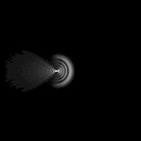
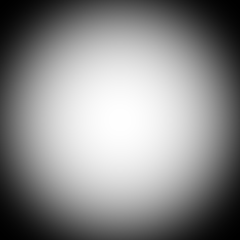
The pupil is the aberrated lens acting on the electron wave: its phase is the full wave aberration, its modulus only the partial-coherence envelope. There are no Thon rings, because rings belong to the intensity CTF below, not to the pupil. Under tilt the pupil is genuinely non-Hermitian, so h = FT−1{P} is a complex wave and panel 1 shows the intensity |h|² that a detector would record — the classic comet. This is the aberration as an optician sees it: the shape of the focused spot. (Amplitude contrast enters only as a constant phase here, so it factors out of |h|² and does not change the PSF.)
2. Complex CTF — T(q) = E·(A·sin(−χeven) + B·cos(−χeven))·e−iχodd
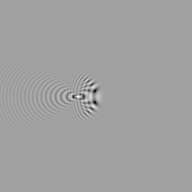
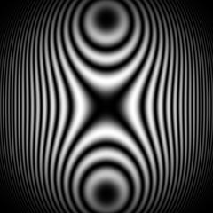
This is the linear image-intensity transfer function for a weak-phase object, and the physically correct model of a real micrograph. The tilted aberration splits into an even part χeven (defocus, Cs, astigmatism, and the defocus/astigmatism the tilt itself induces), which makes the oscillating Thon rings, and an odd part χodd (coma), which enters purely as a phase and never touches the modulus. T is Hermitian — not by approximation but by necessity, since image intensity is real — so the rings stay symmetric and the PSF comes out real. And because T is Hermitian without being even, that real PSF is still one-sided. This is the one mode where both panels are simultaneously what a microscope would give you.
3. Real-valued CTF — C(q) = E·(A·sin(−χtilt) + B·cos(−χtilt))
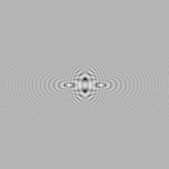
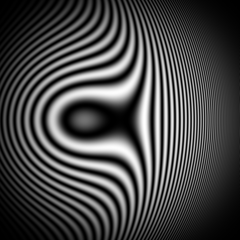
Here the transfer function is evaluated at the full tilted aberration and kept purely real — no even/odd split, no phase factor. Since χtilt(k) ≠ χtilt(−k), C is real but not even, hence not Hermitian, and the Thon rings themselves go one-sided. This is the picture people often have in mind when they say “beam tilt makes the CTF asymmetric”, and it is a useful didactic model — but it is not a microscope, and it costs you the comet exactly as the symmetry rules predict. Use it to see the trade-off, not to predict data.
| Mode | Fourier space (panel 2) | Real space (panel 1) | Use it for |
|---|---|---|---|
| Pupil Function | Non-Hermitian; modulus is the bare envelope, no rings | |h|² — the comet | Seeing coma as the shape of the focused spot; wave optics |
| Complex CTF | Hermitian; symmetric Thon rings, tilt hidden in the phase | Real and one-sided — the comet | What a real micrograph and its power spectrum actually look like |
| Real-valued CTF | Real but not even; lopsided Thon rings | Point-symmetric — no coma | Demonstrating why asymmetric rings and an asymmetric PSF exclude each other |
Figure note: the real-space panels are zoomed to the central ~140 px and intensity-stretched (γ = 0.45) so the faint tail is visible; the Fourier panels are shown as the program’s power-spectrum display, unmodified. Clicking the FT−1 arrow reproduces panel 1 in every mode — each buffer remembers whether its Fourier data inverts to an intensity or to a real part.
The CTF for a tilted specimen (defocus gradient).
This is a different effect from the beam tilt discussed above: there the illumination is tilted, here the specimen is tilted. When the specimen plane is inclined by an angle α about an in-plane axis — as in electron tomography, or simply when a support film does not sit perpendicular to the beam — different parts of the field of view lie at different heights along the optical axis. Since defocus is the height of a point relative to the objective’s focal plane, the local defocus then varies linearly with in-plane position. Measured perpendicular to the tilt axis, Δz(r) = Δz0 + r·tan α, where r is the signed distance from the tilt axis. This linear variation is the defocus gradient: one side of the image is more underfocused, the opposite side less, and only points on the tilt axis itself keep the nominal defocus Δz0.
A consequence is that there is no single CTF for the whole image. A power spectrum taken over the full micrograph shows smeared Thon rings, because each region contributes rings at a slightly different defocus — locally the ring spacing tightens toward the high-defocus side and loosens toward the low-defocus side. For quantitative work the defocus must be treated as position-dependent, for example by fitting a per-particle or per-tile defocus, or by processing only small patches over which the gradient is negligible.
Strictly speaking, image formation for a tilted specimen is no longer the simple Fourier-space multiplication object × CTF that holds for a flat weak-phase object. Because the effective defocus depends on real-space position, the relationship becomes non-local in Fourier space: neighbouring spatial frequencies are coupled, so the transfer is a convolution in Fourier space rather than a point-by-point product. Philippsen, Engel and Engel derived the correct description for this case — the contrast-imaging function for tilted specimens (TCIF) — which relates the transform of the recorded image to that of the object while properly accounting for the defocus gradient, and which reduces to the ordinary CTF in the untilted limit.
Reference: Philippsen, A., Engel, H.-A., and Engel, A. (2007). “The contrast-imaging function for tilted specimens.” Ultramicroscopy, 107(2–3), 202–212. DOI: 10.1016/j.ultramic.2006.07.010
The CTF of a thick slab (lamella).
A thick specimen — for example a FIB-milled cryo-EM lamella, typically 100–300 nm thick — has scattering material spread over a substantial range of heights z. The recorded image is the sum of contributions from every depth, and each depth is imaged at its own defocus, because defocus is measured from the objective’s focal plane. So instead of a single defocus there is a continuous range of defocus values spanning the slab thickness t — a defocus spread of geometric, rather than chromatic, origin.
Averaging the CTF over that defocus range attenuates high spatial frequencies. At high k the oscillations of sin(−χ) shift rapidly with defocus, so contributions from different depths partly cancel when summed through the thickness, and the Thon rings wash out beyond a thickness-limited resolution. The effect is an envelope function E(k) multiplying the mean CTF, mathematically similar to the temporal-coherence (defocus-spread) envelope already built into the tool, but here fixed by the specimen geometry: the thicker the slab, the lower the resolution at which the rings disappear.
Equivalently, high resolution demands a shallow depth of field. The depth of field scales roughly as D ≈ d²/λ, where d is the target resolution and λ the electron wavelength. At 300 keV (λ ≈ 1.97 pm) and d = 3 Å this is only about 45 nm — far thinner than a typical lamella. When the slab is thicker than D, features at different heights are no longer in common focus, the single 2D-CTF (projection) description breaks down, and dynamical (multiple) scattering and Ewald-sphere curvature can no longer be ignored. Properly, the sample must then be treated in depth — per-depth or per-particle defocus, tomographic reconstruction, or Ewald-sphere correction — rather than with one flat transfer function.
This is why thinner lamellae yield higher resolution, and why lamella thickness is a key quality metric. A lamella is also normally milled at a pre-tilt, so the defocus gradient of the previous section and the thickness envelope described here usually act at the same time.
The curvature of the Ewald sphere.
Elastic scattering conserves energy, so every scattered electron keeps the same wavevector length as the incident wave, |k| = 1/λ. In reciprocal space the tips of all elastically scattered wavevectors therefore lie on a sphere of radius 1/λ that passes through the origin — the Ewald sphere. A spatial frequency (a point g in reciprocal space) is recorded with its correct phase only where it lies on that sphere.
Because the electron wavelength is tiny, the sphere is enormous: at 300 keV (λ ≈ 1.97 pm) its radius is 1/λ ≈ 508 nm−1, whereas the frequencies we care about are of order 1/(3 Å) ≈ 3.3 nm−1. Over that small patch the sphere is almost a flat plane through the origin — the projection approximation, which lets a single 2D image stand for a projection of the object (the central-slice / projection theorem). But the sphere is not exactly flat: at transverse frequency g it curves away from the tangent plane by a small amount along the beam (z) direction, the excitation error ζ ≈ λ·g²/2. This same quadratic-in-g geometry is the origin of the defocus term in the CTF phase (χ ∝ λ·Δz·g²) — curvature of the Ewald sphere and defocus are two views of the same effect.
Whether the curvature actually matters depends on how sharply the object is defined along z, and this is where thickness enters. A thin specimen has a reciprocal space that is smeared out along kz (thin in real space ⇒ elongated “rods” in reciprocal space), so the curved sphere still cuts through the correct information and the flat approximation holds. A thick specimen — a slab that is larger in z, such as a lamella or a large particle — has a reciprocal space that is sharply confined in kz (its z-extent 1/t is small). Now the sagitta ζ = λg²/2 can exceed that z-width 1/t, and the sphere samples the object’s 3D transform at (g, ζ) instead of at (g, 0). The recorded image is then no longer a faithful projection: high-resolution information from the front and the back of the object is sampled off-plane, so it is mixed and degraded.
The threshold is again the depth of field: the curvature must be corrected once the thickness exceeds roughly d²/λ for the target resolution d (about 45 nm at 3 Å, 300 keV). Beyond it, applying a single flat 2D CTF to a projection is wrong, because the two halves of the object along z carry opposite effective defocus. Ewald-sphere correction restores the lost resolution by inserting each image into the 3D transform along the curved sphere rather than a flat plane; it becomes important for large particles and thick slabs pushed to high resolution.
References: DeRosier, D. J. (2000). “Correction of high-resolution data for curvature of the Ewald sphere.” Ultramicroscopy, 81(2), 83–98. DOI: 10.1016/S0304-3991(99)00120-5. — Wolf, M., DeRosier, D. J., and Grigorieff, N. (2006). “Ewald sphere correction for single-particle electron microscopy.” Ultramicroscopy, 106(4–5), 376–382. DOI: 10.1016/j.ultramic.2005.11.001.
Advanced: What is a Hough transform?
The Hough transform answers a question that is awkward to ask of an image directly: where are the straight lines?, or where are the circles? Looking for them by tracing pixels is fragile — a line broken by noise or by an overlapping object stops being a line halfway along. The Hough transform sidesteps this by turning the search into something images are good at: finding a bright spot.
The idea is to stop describing the picture by its pixels and start describing it by its shapes. A straight line in a plane is fixed by two numbers, and so is the centre of a circle of known size. Those two numbers span a parameter space: every point of it stands for one possible line, or one possible circle, in the image. The transform then lets every edge pixel of the image vote for all the shapes it could possibly be part of. A pixel lying on no particular structure scatters its votes thinly. A hundred pixels lying along the same line all vote for that one line, and the cell standing for it collects a hundred votes. The output — the accumulator — is a map of that evidence, and the shapes present in the image appear in it as peaks.
This is closely related in spirit to what the Fourier transform does elsewhere in this program: an awkward question in one space becomes an easy one in another. The difference is that the Fourier transform is invertible and linear, whereas the Hough transform throws information away — it keeps only what its chosen family of shapes can express. That is also its strength: everything that is not a line (or not a circle of that size) simply fails to accumulate.
The requirement is that the parameter space be two-dimensional, because only then can the accumulator be looked at as an ordinary image. Lines qualify, and so do circles once the radius is fixed. Circles of unknown radius really need three parameters, which is why the tool offers a sweep over a ladder of fixed radii instead.
Lines: the (θ, ρ) parametrisation
The obvious way to write a line, y = m x + c, is a poor choice here: a vertical line needs an infinite slope, so the parameter space would have to be infinite in one direction and the accumulator could never be a finite image. The Hough transform uses the normal form instead. Drop a perpendicular from the image centre onto the line; let ρ be its signed length and θ its direction. Then the points (x, y) of the line are exactly those satisfying
ρ = (x − cx)·cosθ + (y − cy)·sinθ,
where (cx, cy) is the image centre. Both parameters are now bounded: θ need only run over 180° (a line and the same line turned by 180° are the same line), and |ρ| can be no larger than half the image diagonal. That is a finite rectangle, and it is what the accumulator image shows — θ across the width, ρ down the height.
Now read the same equation the other way round. Fix a point (x, y) and let θ vary: ρ(θ) traces a sinusoid through the parameter space. That sinusoid is the set of all lines passing through that one point. Two points give two sinusoids, and they cross at the single (θ, ρ) that describes the line joining them. Points that are collinear give sinusoids that all pass through one common cell — and that cell is the line they lie on.
So a line in the image is a peak in the accumulator, and its height counts how many edge pixels lie along it. Crucially, those pixels do not have to be adjacent: a dashed line, or one interrupted halfway by something else, votes into the same cell as a solid one and is found just as readily. This is the property that makes the transform worth its cost.
Below is what the tool actually produces. Three straight edges at 20°, 75° and 130° were drawn into an image; the accumulator beside it shows one sinusoid per edge pixel, and three bright knots where the sinusoids belonging to each line come together. Nothing else in the parameter space rises anywhere near them.
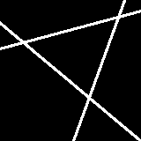
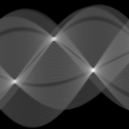
Read the peaks off and you have the lines: the horizontal position of a peak is the angle of its line, the vertical position its distance from the centre. The Inverse Hough transformation option does that reading for you — keep only the peaks with the histogram tools, transform back, and the lines reappear in the original coordinates with everything else gone.
Circles of a known radius
A circle needs three numbers — centre a, centre b, and radius r. Fix the radius and only two are left, so the parameter space is again a plane, and a rather convenient one: it is the space of possible centres, which is the image itself. The accumulator therefore stays in register with the input, and a peak sits literally where the circle is.
The voting rule follows from one observation. If an edge pixel lies on a circle of radius r, then the centre of that circle is exactly r away from it — but in an unknown direction. Knowing nothing else, the pixel must vote for every candidate centre at distance r, which is to say it draws a circle of radius r around itself in the accumulator. Do that for every edge pixel of a real circle and the vote-circles all pass through one common point: the true centre. Everywhere else they merely cross in pairs.
In practice the tool does better than voting blindly in all directions. The Sobel operator that finds the edge pixels also gives the direction of the brightness gradient, and on the rim of a disc that direction points along the radius — inwards for a bright disc, outwards for a dark one. So each pixel need only vote at the two points r along that direction rather than around a whole circle. Both signs are used, so bright and dark objects are found alike, and the votes are spread over a small arc either side to allow for a noisy gradient. This is both far faster and much sharper: the votes that would have smeared around the rest of the vote-circle are never cast.
The radius has to be chosen, and choosing it wrongly is instructive. Below, two discs of radius 20 px and one of radius 10 px were drawn into an image. Asked for radius 20, the accumulator puts a sharp peak on each of the two matching discs — and around the 10 px one it produces a ring instead, because that disc's edge pixels all vote 20 px away from themselves and so agree on a circle rather than on a point. Asked for radius 10, the roles are exactly reversed.
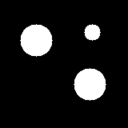
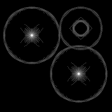
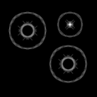
This is why the radius is a control of its own. Circles, one radius puts it on a slider, so you can sweep it by hand and watch peaks sharpen and dissolve as it passes through the true size — which is itself an instructive thing to do. Circles, radii 5,10,20,30,40,50,60 sums a fixed ladder of sizes, so anything circular shows up whatever it is.
And when the size is what you actually want to know, Circles, find radius automatically works it out: it runs the transform at every radius from 5 to 60 pixels and keeps the one whose accumulator has the most convincing peak. The score cannot be the peak's raw height — a larger circle has more rim pixels voting on it, so the maximum drifts upwards with the radius regardless of what the image contains, and the largest would always win. What is scored is how far the peak stands above the accumulator's own background, in units of that background's own spread, which is indifferent to how many votes were cast. The winning radius is then applied on its own and reported in the parameter window, so the tool hands back a measurement of your particles' size as well as a map of where they are.
What it needs, and what it costs
It votes from edges, not from brightness. The image is first run through a Sobel operator and only the strongest gradients are kept — the top tenth of them, so the cut adapts to the image's own contrast. An image with no edges gives an empty accumulator; if that happens, a Hessian or Gabor filter beforehand will usually bring the edges out. Equally, an image full of noise gives noisy edges and a mushy accumulator, so binning or low-pass filtering first is often worth the step.
Cost. The line transform is the expensive one: every edge pixel is swept over the whole angle axis, at half-degree steps. The circle transform casts only a handful of votes per edge pixel, thanks to the gradient trick above, and is correspondingly cheap; the fixed ladder costs seven times one radius, and the automatic search fifty-six. The edge list is capped so that a very large image cannot stall the sweep.
Peaks are broad. A real line is a few pixels wide and not perfectly straight, so its peak is a small blob rather than a single cell, and the votes are deliberately spread over neighbouring cells so that a peak grows smoothly instead of splitting across a boundary. Read peaks with that in mind — the Peak search tool, with a sensible exclusion radius, is the usual way to turn them into a list.
Try it. Draw a few straight lines into an empty image with the paint brush, run Lines, and watch each one arrive as its own peak. Then erase part of one line and transform again: the peak gets shorter but does not move — which is the whole point of the method.
The Fourier Analyzer
Fourier Analyzer is an interactive teaching and analysis tool for the Fourier transform of 2D images. It is designed for classroom use in electron microscopy and image processing, but it works just as well as a general-purpose image & FFT explorer. It is available as a web app (no installation required), as a native desktop application for macOS and Windows, and as part of the 4d software suite.
Overview
The window is split into four panels: the real-space image, its Fourier transform, a history of the images you have loaded or produced, and the matching power spectra. Edits in either panel update the other in real time, so you can directly observe how a change in real space affects Fourier space and vice versa.
Quick start
- Click Load in the top toolbar and select an image (PNG, JPG, MRC, …). It appears in panel 1 (top-left); the FFT appears in panel 2 (top-right).
- Cycle the FT display with the Mode button to see cos/sin, amplitude/phase, complex (HSV), or power-spectrum representations.
- Pan with click-and-drag, zoom with the scroll wheel or pinch gesture, in either panel.
- Pick a tool from the icon column on the right of panel 2 (or the left of panel 1). A parameter window appears at the bottom of the panel; adjust the values and click Apply.
- Mistakes are cheap: ⌘Z / Ctrl-Z undoes the last operation. Each result is also stored in a history slot (panel 3) so you can return to it later.
GUI layout
The window is divided into four resizable panels:
| Panel 1 (top-left) | The real-space image. Tool icons run down the left edge. |
|---|---|
| Panel 2 (top-right) | The Fourier transform of the panel-1 image. Tool icons run down the right edge. |
| Panel 3 (bottom-left) | Sixteen history slots (labelled a–p).
Click a slot to load it into panel 1, or to start a new slot.
While the CTF tool is active this panel instead
plots the CTF Phase Profile (see below). |
| Panel 4 (bottom-right) | The matching power spectrum thumbnails for the same sixteen slots. While the CTF tool is active this panel instead plots the CTF Amplitude Profile. |
Between panels 3 and 4, a strip of four buttons sits in the centre of the window. They all act on the active buffer — the one currently on display in panel 1:
| Button | Function |
|---|---|
| Copy image | Duplicate one image buffer into another, leaving the source untouched — the safe way to try something destructive: copy first, experiment on the copy. Pressing it opens a small parameter window in the bottom-left of panel 1 with a Source buffer (defaults to the one on display), a Target buffer (any existing content is overwritten; defaults to the first free buffer), and Cancel / Duplicate. The window stays open so several buffers can be copied in a row. Pixel values, display range, pixel size and the source file all travel with the copy, so Reload image on the duplicate still fetches the original; if the source is the buffer on display, its live state (edits included) is what gets copied. |
| Reload image | Re-read the active buffer's file from disk (or, in the web version, re-fetch it), discarding any edits made to it. |
| Save image | Save the active panel-1 image. A dialog lets you pick the file format — MRC (raw float data), PNG, JPEG (50/80/90 % quality), PDF or TIFF (only the formats this build can write are listed) — and whether to burn in a scale bar (a white bar with its length in nm in the bottom-right; not applicable to the raw MRC export). On the desktop you then choose the file name and location; in the browser you give a file name and it downloads. |
| Empty buffer | Clear the active buffer after a confirmation. The file on disk is not touched, and Undo brings the buffer back. |
The header bar at the top contains two clickable fields: the Fourier Analyzer title (opens an About dialog with contact info) and Manual (this page).
Top toolbar
| Button | Function |
|---|---|
| Load | Open an image file (PNG, JPG, BMP, MRC). MRC reads take the pixel size from the header; formats that carry no scale (PNG, JPG, TIFF) start with an assumed 1 pixel = 1 Å, flagged as “Assumed:” under panel 1 until you set a real value by double-clicking the pixel-size line. |
| New | Create a blank image of a chosen size (512–4096 pixels) in a fresh slot. |
| Undo / Redo | Step backward or forward through the edit history of the current slot. Also bound to ⌘Z and ⇧⌘Z. |
| Basic / Advanced | The left half of the pair of small buttons above the display-mode button; the label shows the level you are on, and clicking switches to the other. Advanced is the default and offers every function. Basic hides the groups that need some background to use — Filter, Amyloid, Particles and Align in panel 1, and CTF in panel 2 — so that a first-time user is not faced with all of them at once. The hidden groups leave the tool column entirely rather than being greyed out, so the remaining squares are larger. Nothing is lost: no image, buffer or history is touched, a function that was open when you switch down is simply closed, and switching back brings everything straight back. The choice is remembered between sessions. |
| Fullscreen / Window | The right half of that pair. Unlike its neighbour, this label names where the button leads: it reads Fullscreen while the application is in a normal window and Window while it fills the screen. Separately, the little maximize icon below either image opens a display-only full-screen view of that image with no window title bar; see Maximized image view. |
| Mode | Cycle the panel-2 display through cos/sin, amplitude/phase, complex (HSV), and power-spectrum modes. |
The mask center for display toggle that used to live in this toolbar now sits next to the panel-2 histogram, stacked above the freeze display contrast toggle — see the Mouse & trackpad section below.
FT display modes
The panel-2 display can show the Fourier transform in four ways. Cycle through them with the Mode button in the top toolbar.
| Mode | What is shown |
|---|---|
| cos / sin | Two side-by-side panels showing the real (cos) and imaginary (sin) parts of the FT. Useful for visualising symmetry: the cos panel is symmetric, the sin panel is anti-symmetric for real input images. |
| amplitude / phase | Two side-by-side panels: amplitude
(√(real² + imag²)) and phase
(atan2(imag, real)). Phase carries most of the
structural information. |
| complex | A single panel using HSV colour: hue encodes phase,
brightness encodes amplitude. Compact view that
shows both at once. A small colour-wheel legend with phase
labels (0°, ±180°, ±90°)
is drawn below the bottom-left corner of the display. |
| power | The squared amplitude with a logarithmic look-up table. This is what is shown in the panel-4 thumbnails. |
The Fourier transform is always centred: the DC term (zero frequency) sits at the centre of panel 2, and high frequencies are at the corners.
Mouse & trackpad
| Action | Effect |
|---|---|
| Left-click + drag | In an empty area: pan the panel. With a tool active: paint, erase, or drag the tool's handle. |
| Scroll wheel | Zoom in or out at the cursor position. |
| Pinch gesture (trackpad) | Zoom in or out smoothly. |
| Click on the histogram bar | Drag the white triangles below a panel to clip the display look-up table (LUT) for contrast adjustment. The underlying pixel values are not changed. |
| Click a toggle next to the histogram | Each panel shows two 3D-look toggle buttons stacked
vertically next to its histogram. Raised = off, sunken = on.
|
| Hover over a parameter label | A tooltip explains what the parameter controls. |
| Hover over a tool icon | A tooltip with the tool name appears next to the icon and floats above the image / Fourier display rather than being clipped by it. |
| Hover over a group square | The tools the group contains open in a column right beside the square, level with it and touching it, so you can see what is inside a group without opening it. The group's name is written across the first of those icons — it needs no room of its own there, which is what lets the column sit close enough to reach with one short sideways move. The icons stay up while the pointer is on them, each showing its own tooltip in place of the group name, and a click starts that tool straight away: there is no need to open the group first. Moving the pointer away closes the column again. Groups holding a single tool have nothing to reveal and only show their name. |
| Click a history slot (panel 3 or 4) | Activate that slot. Any pending edits in the previous slot are stored before switching. While Align to reference is open, the clicked buffer also becomes its image source and output buffer. |
History slots
Panel 3 holds sixteen image slots labelled a through
p. The currently active slot is highlighted. Each slot
keeps:
- The real-space image and its raw pixel values.
- The file path or generated label (e.g. “phase ramp: N=1024 dir=30° step=10°”).
- The pixel size in Ångström (and whether it is only an assumed 1 px = 1 Å).
- The most recent operation applied to the buffer, shown as a line under the file name in panel 1.
- A power-spectrum thumbnail (shown in panel 4).
In the desktop versions of the program, the History is persisted between sessions — you can close the app and pick up where you left off. Use the New button to start a fresh slot, or click an empty thumbnail to begin one.
The web (browser) version also remembers the last session, within the limits of the browser. It stores the identity of each example image you had loaded (its path on the server) in the browser's local storage, and on the next launch re-fetches the small ones automatically; larger images come back as “click to load” placeholders, loaded on demand. Images you uploaded from your own computer cannot be restored this way — the browser has no access to the original file after the page is closed — so those buffers are not remembered.
Maximized image view
A small maximize icon sits just below each image (panel 1 and panel 2). Clicking it opens a display-only, true full-screen view of that image: the top-level window goes fullscreen with no title bar, and the image fills the whole screen against a black background. Zoom and pan stay live; every other interaction is suppressed. Press Esc, or tap the ✕ in the top-right corner, to leave — the window returns to whatever state it was in before.
The arrow keys page through the buffers without leaving the view: ← and ↑ step back, → and ↓ step forward. Only buffers that actually hold an image are visited, and the list wraps round, so repeated presses in one direction tour everything you have loaded and come back to where you started. Each step switches the displayed buffer exactly as clicking its thumbnail would, and the buffer's letter appears in yellow in the top-left corner for one second before fading out — long enough to see where you have landed, short enough to leave the picture alone. If a buffer's Fourier transform is not already cached it is computed on arrival, so stepping onto a large image can pause briefly. With only one buffer in use the keys do nothing.
A scale bar is drawn in the bottom-right corner: a white bar over a faint black shadow, with its length printed above it. The bar spans a rounded distance of roughly a tenth to a twentieth of the screen width. In the real-space view it is labelled in nm (pixel sizes are stored in Ångström); in the Fourier view it is a reciprocal-space bar labelled in 1/Å. When the pixel size is only assumed, the bar carries a small “(if 1px = 1Å)” note underneath, since the whole scale is then conditional.
Tool reference (sub-pages)
Each panel has its own column of tool squares, organised into groups. A group square holding several tools opens a small pop-up column of sub-squares when clicked; you then click a sub-square to activate that tool. A single-tool group activates directly. Simply resting the pointer on a group square is enough to look inside it: its tools appear in a column beside the square, with the group's name written across the first of them, and can be clicked from there. The detailed reference for every tool lives on its own page:
Exercises
A set of guided exercises for classroom or self-study use. Each one introduces a different aspect of the Fourier transform and the relevant tools in the app. Try to predict the outcome before clicking Compute or Apply.